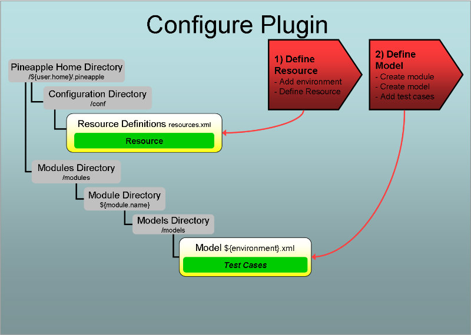

Introduction
Overview
Invoking the plugin
The plugin is invoked by the core component when the core component is used by one of the Pineapple clients. To trigger invocation by the core component the plugin needs to be configured.
Configuration
Two steps are needed to configure the plugin:
- Define resource: Define resource which enables usage of the the plugin. For this particular plugin the resource doesn't define a manageable entity in some target environment but only serves to setup the execution of the plugin.
- Define the module and add a model which defines the script(s) to execute. The model is defined using the WebLogic scripting tool (WLST) plugin schema.
For more info about configuration of plugins:
- For info about resources and credentials read the Environment configuration document.
- For info about modules and module models read the Modules configuration document.
Supported operations by the plugin
The plugin supports the operations:
- deploy-configuration
- undeploy-configuration
For more information about the default operations, refer to the Operation and workflow reference.
Execution of the deploy-configuration operation
When the plugin is invoked with this operation and a module model which contains entities defined by the plugin schema then the plugin will:
- Read the WebLogic Home directory from the used resource.
- Validate that the WebLogic Home directory is valid.
- Validate that the script defined in the plugin model exists.
- Validate that the script properties file defined in the plugin model exists.
- Validate that the WLST invoker script exists with the WebLogic home directory.
- Execute the script.
Execution of the undeploy-configuration operation
When the plugin is invoked with this operation and a module model which contains entities defined by the plugin schema then the plugin will:
- Read the WebLogic Home directory from the used resource.
- Validate that the WebLogic Home directory is valid.
- Validate that the script defined in the plugin model exists.
- Validate that the script properties file defined in the plugin model exists.
- Validate that the WLST invoker script exists with the WebLogic home directory.
- Execute the script.
Define resource
The purpose of defining a resource for this plugin is to define a mapping between the resource ID and the plugin ID. The resource ID is the user defined key which is referenced from module models which are targeting the resource. The plugin ID is the Java package name which implements the plugin: com.alpha.pineapple.plugin.weblogic.scriptingtool.
To define a new resource, add a resource element to the target environment in the configuration file ${pineapple.home.dir}/conf/resources.xml:
<?xml version="1.0" encoding="UTF-8"?>
<configuration xmlns="http://pineapple.dev.java.net/ns/environment_1_0"
xmlns:xsi="http://www.w3.org/2001/XMLSchema-instance">
<environments>
<environment id="linux-default" >
<resources>
<resource id="weblogic-wlst-r121" plugin-id="com.alpha.pineapple.plugin.weblogic.scriptingtool" >
<property key="home-directory" value="/home/weblogic/Oracle/Middleware/wlserver_12.1" />
</resource>
</resources>
</environment>
</environments>
</configuration>
For all the details about configuration of environments and resources, please visit the Environment Configuration Reference.
The semantics of the resource element is:
The id attribute
Identifies the resource uniquely in the current environment. In the above example the id weblogic-wlst-r121 which should define the scripting tool usage of a WebLogic release 12.1.1.
The plugin-id element
Defines the plugin id for which should be used to execute operations for the resource. The plugin id for this plugin is: com.alpha.pineapple.plugin.weblogic.installation.
The property attributes(s)
Mandatory properties used by the plugin:
- home-directory - Home directory for Fusion Middleware product installation which implements WLST. The main example of this is the WebLogic server, which contains the main implementation of WLST. Other Fusion Middleware products has started to implement custom WLST commands which extends the functionality of WLST. An example is the SOA Suite which implements commands for deployment of composite applications. To be able to use WLST custom commands implemented by a product the home-directory attribute should point to the home directory of the product which implements the commands.
Optional properties used by the plugin:
- enable-linux-fast-random-generator - WLST execution on Linux OS can be observed to hang occasionally. The observable behavior is that the WLST script never completes its execution and the process is killed by Pineapple after its internal process time out has been reached. The problem is caused by the configured random generator in the java.security file on Linux, which reads 'randomness' from /dev/random which is slow. Setting the enable-linux-fast-random-generator property to true will circumvent the issue by invoked WLST with the system property -Djava.security.egd=file:/dev/./urandom which generates random numbers faster.
Define the module

A module defines the input used by Pineapple to execute operations. A module is defined by a directory layout. Part of a module is the model(s) which defines what happens when the module is invoked. A model is put together by one or more sub models from different plugins. Each plugin defines its own schema for its particular model
The WebLogic scripting tool plugin schema
This plugin defines a schema named The WebLogic scripting tool (WLST) plugin schema which defines the http://pineapple.dev.java.net/ns/plugin/weblogic_scriptingtool_1_0 namespace. For more information about where the schema can be found, refer to the Schema locations for plugins page.
Name and location of the the module model file
Execution of scripts are defined in the module model files which are located at ${module-dir}>/models/${environment}.xml where:
- ${module-dir} is the Module Directory which identifies the module with a unique name and version.
- ${environment}.xml is a model file for a target environment, with ${environment} substituted with the environment name, e.g. linux-default.xml for an environment named linux-default.
If the module model file doesn't exist for an environment where a script should be executed, then create the file and name it after the target environment.
The module model configuration schema
Module model files are defined using the module model configuration schema which defines the http://pineapple.dev.java.net/ns/module_model_1_0 namespace. Since module model files contain elements from multiple namespace all the elements and attributes should be qualified. The header and root element should be defined as (look in the Modules configuration document for more details):
This example shows definition of the minimal model file for linux-default:
<?xml version="1.0" encoding="UTF-8"?> <mmd:models xmlns:xs="http://www.w3.org/2001/XMLSchema-instance" xmlns:mmd="http://pineapple.dev.java.net/ns/module_model_1_0" />
Adding the plugin schema to the model
The next step is to include the The WebLogic scripting tool (WLST) plugin schema to get access to the entities defined by the schema:
<?xml version="1.0" encoding="UTF-8"?> <mmd:models xmlns:xs="http://www.w3.org/2001/XMLSchema-instance" xmlns:mmd="http://pineapple.dev.java.net/ns/module_model_1_0" xmlns:wsp="http://pineapple.dev.java.net/ns/plugin/weblogic_scriptingtool_1_0" />
Now we have a minimal module model file with three namespaces:
- xs: The basic XMLSchema schema which is only used in the root element of the document.
- mmd: The module model schema which is used to define the skeleton of a model file.
- wsp: The WebLogic scripting tool (WLST) plugin schema which is used to define script executions.
Defining the model which targets resources
Add a new model with a target-resource attribute. The value of the target-resource should match the id of the resource which was defined previously in the section Define resource, e.g. weblogic-wlst-r121:
<?xml version="1.0" encoding="UTF-8"?>
<mmd:models xmlns:xs="http://www.w3.org/2001/XMLSchema-instance"
xmlns:mmd="http://pineapple.dev.java.net/ns/module_model_1_0"
xmlns:wsp="http://pineapple.dev.java.net/ns/plugin/weblogic_scriptingtool_1_0" />
<mmd:model target-resource="weblogic-wlst-r121">
<mmd:content />
</mmd:model>
</mmd:models>
Add content to the model which uses the plugin through the weblogic-wlst-r121 reference:
<?xml version="1.0" encoding="UTF-8"?>
<mmd:models xmlns:xs="http://www.w3.org/2001/XMLSchema-instance"
xmlns:mmd="http://pineapple.dev.java.net/ns/module_model_1_0"
xmlns:wsp="http://pineapple.dev.java.net/ns/plugin/weblogic_scriptingtool_1_0" />
<mmd:model target-resource="weblogic-wlst-r121">
<mmd:content>
<wsp:wlst>
</wsp:wlst>
</mmd:content>
</mmd:model>
</mmd:models>
Define script executions in the module model
Define script executions which invokes WLST scripts:
Example:
<?xml version="1.0" encoding="UTF-8"?>
<mmd:models xmlns:xs="http://www.w3.org/2001/XMLSchema-instance"
xmlns:mmd="http://pineapple.dev.java.net/ns/module_model_1_0"
xmlns:wsp="http://pineapple.dev.java.net/ns/plugin/weblogic_scriptingtool_1_0" />
<mmd:model target-resource="weblogic-wlst-r121">
<mmd:content>
<wsp:wlst>
<wsp:wlst-script file="modulepath:bin/script.py" />
</wsp:wlst>
</mmd:content>
</mmd:model>
</mmd:models>
wlst-script element
Defines execution of a WLST script.
The semantics of its attributes is explained in the next sub sections:
file attribute
Mandatory attribute, which defines the location of the file containig the script. The location can either be absolute or local to the module.
- Example of an absolute path on Windows: C:\Documents and Settings\mrpono\.pineapple\modules\weblogic-r923-example\bin\script.py
- Example of an path local to the module, where the modulepath expression is resolved to the root directory of the module: modulepath:bin/script.py
properties-file attribute
Optional attribute, which defines the location of a property file which is loaded by the plugin prior to executionof the script. The property file should contain key value par and all the load properties will be available as variable within thwe script.
- Example of an absolute path on Windows: C:\Documents and Settings\mrpono\.pineapple\modules\weblogic-r923-example\bin\script.properties
- Example of an path local to the module, where the modulepath expression is resolved to the root directory of the module: modulepath:bin/script.properties
Example:
<?xml version="1.0" encoding="UTF-8"?>
<mmd:models xmlns:xs="http://www.w3.org/2001/XMLSchema-instance"
xmlns:mmd="http://pineapple.dev.java.net/ns/module_model_1_0"
xmlns:wsp="http://pineapple.dev.java.net/ns/plugin/weblogic_scriptingtool_1_0" />
<mmd:model target-resource="weblogic-wlst-r121">
<mmd:content>
<wsp:wlst>
<wsp:wlst-script file="modulepath:bin/script.py" properties-file="modulepath:bin/script.properties" />
</wsp:wlst>
</mmd:content>
</mmd:model>
</mmd:models>
demo-trust-enabled attribute
Optional attribute, which defines whether WLST should be configured use the WebLogic DemoTrust key store. Enabling this parameter will invoke WLST with the arguments:
- -Dweblogic.security.TrustKeyStore=DemoTrust
- -Dssl.debug=true
- -Dweblogic.security.SSL.ignoreHostnameVerification=true
Example:
<?xml version="1.0" encoding="UTF-8"?>
<mmd:models xmlns:xs="http://www.w3.org/2001/XMLSchema-instance"
xmlns:mmd="http://pineapple.dev.java.net/ns/module_model_1_0"
xmlns:wsp="http://pineapple.dev.java.net/ns/plugin/weblogic_scriptingtool_1_0" />
<mmd:model target-resource="weblogic-wlst-r121">
<mmd:content>
<wsp:wlst>
<wsp:wlst-script file="modulepath:bin/script.py"
properties-file="modulepath:bin/script.properties"
demo-trust-enabled="true" />
</wsp:wlst>
</mmd:content>
</mmd:model>
</mmd:models>
Java system properties injected at runtime by Pineapple
Pineapple add system properties to the WLST script. These system properties are defined by Pineapple and available at runtime with from a WLST script:
- pineapple.module.path defines an absolute path to the module directory. The purpose of the property is to enable WLST scripts to load files within a module. It correspond to the modulepath expression which can be used in module models.
- pineapple.weblogic.home.path defines an absolute path to the WebLogic Home directory defined in the resource to which the model is targeted at runtime. The purpose of the property is to access directories within a WebLogic installation. An example is the the default NodeManager directory at ${WEBLOGIC_HOME}/common/nodemanager which might be used for enrollment of domains.